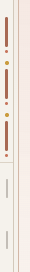
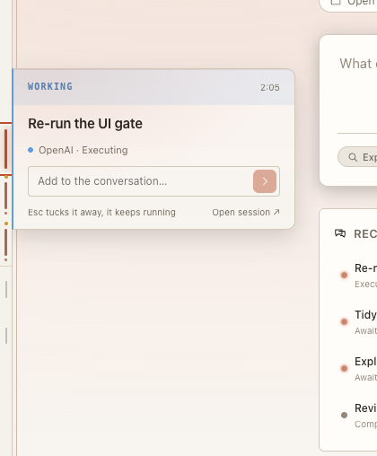
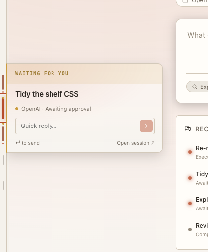

Every design shows the same five sessions, so you can compare them directly: one working, one waiting for an approval, one waiting for your reply, one finished an hour ago, and one that failed yesterday. The rail stays 14px wide. Frames are at the app's real scale.
The rail at 3×, then the cards for the working session and the approval. Working, approval and reply all draw the same accent line. The 4px amber dot is the only sign of state, and it sits in the gap between spines. The failed session is the same short grey line as a finished one. The approval card doesn't say what is being approved and offers only a reply box. The working card shows no activity, because tool steps aren't messages.



The spine's colour is the session's state and its length is how recent it is, so the dots go. A working spine has a slow travelling stripe, a reply wait is dashed, and an approval is a thicker bar. The card leads with what it needs: an approval shows the exact command with Deny and Approve.
Each spine becomes a hairline with a pixel-fit state glyph at its centre: a turning arc, !, ?, ✓ and ×, drawn on the same 10px grid as the creation cells. The meaning comes from shape, so it holds in greyscale. The card repeats the glyph in its band.
Spines become 11px tinted blocks, the same material as the new creation cells, so the whole rail reads as one shelf of books. Recent books stand taller and fill solid while open, and the selected one carries a small bookmark notch. The card turns like a page: ↑ and ↓ step through sessions without leaving it.
Each spine is a small track that fills as the session works through its plan. A working fill glows at its leading edge, a need stops the fill with an amber cap, a failure ends it with a red cap, and a done track is full. The card shows the plan as a checklist with the current step marked.
Sessions that need you move to the top of the shelf, above a divider, with wide amber spines. A count badge heads the rail. Hovering the badge opens a short stack of everything that's waiting, and you can answer each one in place.
The rail becomes a time axis with now at the top. Each session is a bar placed where it ran and as long as it ran, with faint hour ticks on the left. Gaps show quiet periods. The card shows the session's own turns as a row of dots, so you can see its rhythm and jump to any turn.
Each spine splits in two. The top half lights while the agent is working and the bottom half lights when it's your turn, so the rail answers the one question that matters at a glance. The card is a small chat that shows the last exchange in both voices.
You can pin long-running sessions to the top of the rail, marked with a small ring, so they never fall off the shelf's five. A "+4" cell at the foot opens a searchable list of everything else. The card gets a pin toggle.
Coding sessions are judged by what they changed, so each spine gets a tiny diff bar beside it: the green part is lines added and the red part lines removed. The card lists the changed files with counts, the branch, and a Review button that opens the diff.
Takes 01's state lines as the base and adds 02's glyphs only where you're needed: a filled ! or ? cap on the spine. The "+4" overflow from 08 sits at the foot. Each card body depends on the state: working shows the live step and Stop, approval shows the command with Deny and Approve, a question shows the answers, done shows the summary and its changes, and failed shows the error with Retry. ↑ and ↓ move between sessions. This is the one I'd build.